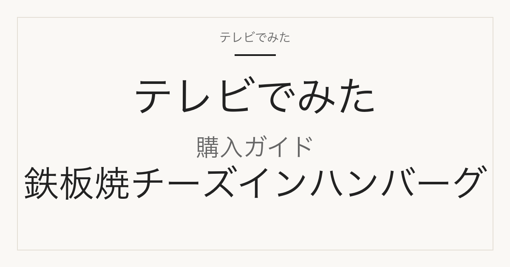

購入ガイド
エーデルシェフ 鉄板焼チーズインハンバーグはどこで買える？単品・セット・130g版の違い
サタプラ 2026年8月29日 チーズハンバーグ 第1位で紹介

どこで買える？
日東ベスト「エーデルシェフ 鉄板焼チーズインハンバーグ」は、日東ベスト公式オンラインショップ（シロッコさがえオンラインストア）で100g単品が税込289円で販売されており、2026-09-09 14:30時点で在庫「○」ですが「お届けまでお時間をいただいております（発送まで4〜6日程度）」の表示があります。楽天市場で型番・容量が一致する出品は、Smile Spoonの100g単品（347円）と100g×8個（3,070円）、ベイシアの100g単品（540円）の3件を確認しましたが、いずれも2026-09-09 14:29時点で売り切れ表示でした。急ぐ場合、公式ショップは「中身は同じ商品」と説明する130g×10個入り（税込3,700円・送料込）を9月中に発送できるとしており、楽天でも130gの業務用JG版（5個2,780円／10個4,280円）は在庫がある状態でした。メーカーによると一部店舗でも販売されていますが、取り扱いは店舗により異なります。

この記事には広告・アフィリエイトリンクが含まれます。正式商品名・型番・容量はメーカー公式または正規販売ページで確認しています。価格・送料・在庫は確認日時時点のもので変わります。価格の安さ・在庫の有無・配送日数は、確認した範囲と日時を添えた事実だけを書き、断定していません。
番組で紹介された商品の正式名称と仕様
| メーカー | 日東ベスト |
|---|---|
| 正式商品名 | Edel Chef 鉄板焼チーズインハンバーグ 1個入り（100g） |
| 型番・品番 | 未確認（メーカー型番の表示なし。楽天ベイシアの商品番号 4902385014367-1、公式ショップ商品コード R0072） |
| JAN | 4902385014367 |
| 容量・サイズ | 100g（1個入り） |
| バリエーション | 市販用「Edel Chef 鉄板焼チーズインハンバーグ 1個入り（100g）」のほか、業務用ジョイグルメ（JG）ブランドの「鉄板焼チーズインハンバーグ（130g）」があり、公式オンラインショップは130g×10個入りを「サイズ・パッケージが異なるが中身は同じ商品」と説明している。同じEdel Chefシリーズには「ゴツゴツ食感鉄板焼ハンバーグ 1個入り（100g）」（チーズなし・JAN 4902385014350）、「直火焼ハンバーグ 5個入り（120g×5）」「お箸でいただくハンバーグステーキ 1個入り（180g）」がある。色違いはない。 |
公式ショップ記載：製品重量100g、外寸法 幅175mm×奥行140mm×高さ27mm、5種のチーズ（チェダー、クリーム、カマンベール、マスカルポーネ、モッツァレラ）、ソースなし、賞味期限は製造日から12ヶ月、電子レンジ500W 2分10秒／600W 1分40秒、ボイル約17分、栄養成分（100gあたり）226kcal。アレルゲン：卵、乳、小麦、牛肉、大豆、鶏肉、豚肉。
販売先ごとの入数・価格・送料
| 販売先 | 商品名・型番 | 入数 | 確認時価格 | 送料 | 確認日時 |
|---|---|---|---|---|---|
| 日東ベスト公式オンラインショップ（シロッコさがえオンラインストア） | 【冷凍】Edel Chef 鉄板焼チーズインハンバーグ(100g) | 1個（100g） | 289円（税込） | 未確認（冷凍クール便。他商品との同梱不可、着日指定不可、発送まで4〜6日程度の表示あり） | 2026-09-09 14:30 |
| Smile Spoon 楽天市場店 | [冷凍] 日東ベスト EC鉄板焼チーズインハンバーグ 100g（単品） | 1個（100g）・売り切れ表示 | 347円（税込） | 未確認 | 2026-09-09 14:29 |
| Smile Spoon 楽天市場店 | [冷凍] 日東ベスト EC鉄板焼チーズインハンバーグ 100g×8個 | 8個（100g×8）・売り切れ表示 | 3,070円（税込） | 未確認 | 2026-09-09 14:29 |
| ベイシア楽天市場店 | [冷凍] 日東ベスト エーデルシェフ鉄板焼チーズインハンバーグ 100g（商品番号 4902385014367-1） | 1個（100g）・売り切れ表示 | 540円（税込） | 店舗表記「3,980円以上のお買い物で送料無料（一部地域を除く）」。本商品単体の送料は未確認 | 2026-09-09 14:29 |
| 日東ベスト公式オンラインショップ（シロッコさがえオンラインストア） | ※送料込み※着日指定不可【冷凍】鉄板焼チーズインハンバーグ(130g)×10個入り（業務用サイズ。公式が「中身は同じ商品」と説明） | 10個（130g×10）・在庫○・9月中に発送できますの表示 | 3,700円（税込） | 送料込み（10個入り購入で送料メーカー負担の表記） | 2026-09-09 14:30 |
| 美味しさギュ！ここだけ（楽天） | 日東ベスト 鉄板焼 チーズインハンバーグ 5種のチーズ 冷凍 130g/個 5個セット/10個セット ジョイグルメ JG 業務用（130g版・完全一致ではない） | 5個または10個（130g×5／×10）・売り切れ表示なし | 5個 2,780円／10個 4,280円（税込） | 送料無料（商品名に表記） | 2026-09-09 14:29 |
| 中島商店 楽天市場店 | 日東ベスト JG鉄板焼チーズインHB130（冷凍）130g×1個（業務用130g版・完全一致ではない） | 1個（130g）・売り切れ表示なし | 265円（税込） | 未確認（冷凍便） | 2026-09-09 14:29 |
| ベイシア楽天市場店 | [冷凍] 日東ベスト エーデルシェフゴツゴツ食感鉄板焼ハンバーグ 100g×8個（チーズなしの別商品・JAN 4902385014350） | 8個（100g×8）・売り切れ表示 | 2,590円（税込） | 未確認 | 2026-09-09 14:29 |
2026-09-09 14:29時点で、楽天の完全一致3件（Smile Spoon単品・Smile Spoon 8個・ベイシア単品）は全て売り切れ表示。在庫が確認できたのは公式オンラインショップ（100g単品289円・発送に4〜6日程度、130g×10個入り3,700円送料込）と、楽天の130g業務用JG版（美味しさギュ！ここだけ／中島商店）のみ。公式ショップは100g単品について他商品との同梱不可・着日指定不可・注文後キャンセル不可と明記している。
似た商品・別容量との違い
100g単品（Edel Chef・市販用）と130g業務用JG版
番組で紹介されたのは「Edel Chef 鉄板焼チーズインハンバーグ 1個入り（100g）」（JAN 4902385014367）。楽天や公式で見かける「JG鉄板焼チーズインハンバーグ 130g」はジョイグルメブランドの業務用サイズで、公式オンラインショップは「サイズ・パッケージは異なりますが中身は同じ商品」と説明している。調理時間は異なり、公式ショップ表記で100gは電子レンジ600W 1分40秒／ボイル約17分、130gは600W 3分20秒／ボイル約20分。
単品と8個セット（楽天Smile Spoon）
Smile Spoon楽天市場店は100g単品（税込347円）と100g×8個（税込3,070円、1個あたり約384円）の2ページを出している。どちらも同じ100g商品で、2026-09-09 14:29時点では両方とも売り切れ表示。
公式ショップの100g単品と130g×10個入り
公式オンラインショップでは100g単品が税込289円（送料の明示なし（10個入り購入時は送料メーカー負担の記載あり）、発送まで4〜6日程度、同梱不可）、130g×10個入りが税込3,700円（1個あたり370円、送料込み、9月中に発送できますの表示）。まとめ買いで早く受け取りたい場合は後者、番組と同じ100gパッケージが欲しい場合は前者。
「ゴツゴツ食感鉄板焼ハンバーグ」はチーズなしの別商品
同じEdel Chefシリーズの「ゴツゴツ食感鉄板焼ハンバーグ 1個入り（100g）」（JAN 4902385014350）はチーズが入っていない別商品。楽天ベイシアでは100g×8個が2,590円で出ているが、商品名に「チーズイン」が入っているかで見分ける。
購入前によくある質問
番組の289円は単品の価格？
番組掲載価格289円は番組調べの価格で、どの販売先の価格かは公式データに記載がありません。当サイトの照合では、メーカー公式ショップの100g単品が同額でした（2026-09-09確認）。
楽天で今すぐ買える？
2026-09-09 14:29時点で、100gの完全一致3件（Smile Spoon単品・8個セット、ベイシア単品）はすべて売り切れ表示でした。同時点で売り切れ表示が無かったのは130gの業務用JG版（美味しさギュ！ここだけの5個・10個セット、中島商店の1個）です。
公式ショップで買うと送料はかかる？
100g単品は送料込みの表記がなく、送料は未確認です（冷凍クール便、他商品との同梱不可）。130g×10個入りは「送料込み」「10個入り購入で送料弊社負担」と明記されています。100g単品は注文後のキャンセル不可、着日指定不可の記載があります。
スーパーなどの店頭でも売っている？
日東ベストは公式お知らせで「一部店舗で販売しています。店舗によって取り扱いおよび在庫状況が異なります」としています。具体的な取扱店舗名は公式に示されていないため未確認です。
出典・確認方法
- 日東ベスト お知らせ「『サタプラ』で当社商品が紹介されます」（2026年8月28日）
- 日東ベスト お知らせ「『サタプラ』ひたすら試してランキングで総合1位を獲得しました」（2026年8月29日）
- Edel Chef 商品ラインナップ（日東ベスト公式）
- 日東ベスト公式オンラインショップ Edel Chef 鉄板焼チーズインハンバーグ(100g)
- 日東ベスト公式オンラインショップ 鉄板焼チーズインハンバーグ(130g)×10個入り
- 楽天 Smile Spoon 100g単品
- 楽天 Smile Spoon 100g×8個
- 楽天 ベイシア 100g単品
- 楽天 美味しさギュ！ここだけ 130g 5個/10個セット
- 楽天 中島商店 JG鉄板焼チーズインHB130
- 楽天 ベイシア ゴツゴツ食感鉄板焼ハンバーグ 100g×8個（別商品）
- 当サイト サタプラ チーズハンバーグランキングTOP5（2026年8月29日）
公開：2026年9月9日／最終更新：2026年9月9日。掲載内容は確認日時時点の一次情報によります。